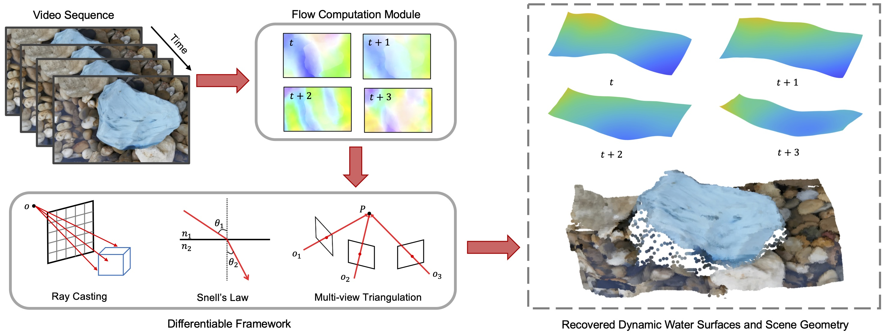

In-the-Wild Single Camera 3D Reconstruction
Through Moving Water Surfaces
Jinhui Xiong, Wolfgang Heidrich
ICCV 2021 (Oral)

We propose a differentiable framework to estimate underwater scene geometry along with the time-varying water surface. The inputs to our model are a video sequence captured by a fixed camera. Dense correspondence from each frame
to a world reference frame (selected from the input sequences) is pre-computed, ensuring the reconstruction is performed in a unified coordinate system. We feed the flow fields, together with initialized water surfaces and scene geometry (all are
initialized as planar surfaces), into the framework, which incorporates ray casting, Snell’s law and multi-view triangulation. The gradients of the specially designed losses with respect to water surfaces and scene geometry are back-propagated, and
all parameters are simultaneously optimized. The final result is a quality reconstruction of the underwater scene, along with an estimate of the time-varying water-air interface. The data shown here was captured in a public fountain environment.
Abstract
We present a method for reconstructing the 3D shape of underwater environments from a single, stationary camera placed above the water. We propose a novel differentiable framework, which, to our knowledge, is the first single-camera solution that is capable of simultaneously retrieving the structure of dynamic water surfaces and static underwater scene geometry in the wild. This framework integrates ray casting of Snell’s law at the refractive interface, multi-view triangulation and specially designed loss functions.
Our method is calibration-free, and thus it is easy to collect data outdoors in uncontrolled environments. Experimental results show that our method is able to realize robust and quality reconstructions on a variety of scenes, both in a laboratory environment and in the wild, and even in a salt water environment. We believe the method is promising for applications in surveying and environmental monitoring.
Paper
paper [ReconstructionThroughMovingWater.pdf (2.2MB)]
Supplemental Material [Supp_ReconstructionThroughMovingWater.pdf (11.8MB)]
code [https://github.com/vccimaging/Reconstrution_Through_Moving_Water]